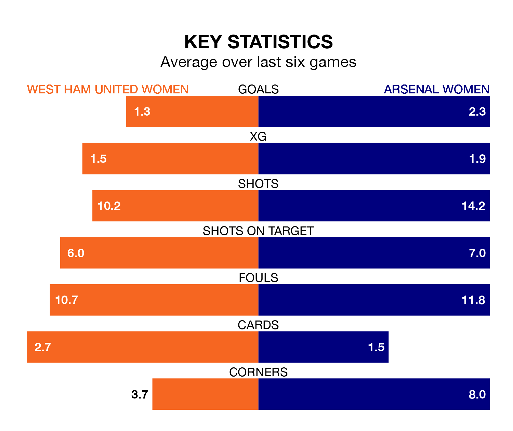

Struggling West Ham United Women face Arsenal Women at the Chigwell Construction Stadium on Sunday looking to build on a win in their last league outing.
After securing all three points with a 2-1 victory over Bristol City Women on January 28, the Hammers sit 11th in FA Women's Super League.
They travel to play an Arsenal side third in the standings, who also won their last match, 2-0 against Liverpool Women.
With 28 goals in 12 games so far this season, Arsenal are the league's joint-third-highest scorers with 2.3 goals per game. And they are conceding fewer than average, letting in 11 goals at a rate of 0.9 per game.
West Ham United, meanwhile, are below average scorers, with 1.1 goals per game, compared to a league average of 1.7. They have conceded 2.2 goals per game.
In the last 10 years, West Ham United and Arsenal have played each other on 12 occasions. Arsenal won 11 of them and they drew once.
On average, the Hammers scored 0.8 goals and the Gunners 3.2 in those matches.
Their last meeting was on November 26, when Arsenal won 3-0 at home.
In Manuela Zinsberger, the Gunners can rely on one of the league's safest pair of hands. She has kept three clean sheets in her 11 appearances this season, and only two other 'keepers – Manchester City Women's Khiara Keating and Manchester United Women's Mary Earps – have been able to prevent the opposition scoring on more occasions in FA Women's Super League.
In the Hammers' net, Mackenzie Arnold has one clean sheet in nine games. She has conceded a goal every 45 minutes, more than twice as often as the 110 minutes between goals for Zinsberger.
The hosts are in bad form in FA Women's Super League, with one win and a draw from their last six games.
With five wins and one loss over that period, the away side's form is much better – they have taken 15 points from 18, compared to West Ham United's four.
Updated: 09:21 (UTC), 30/01/24